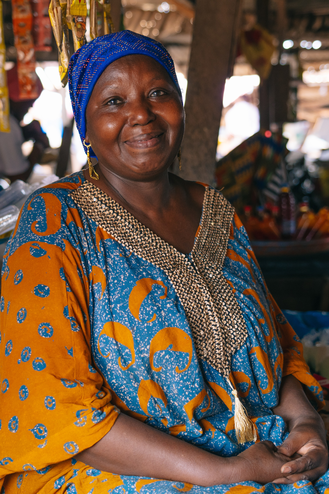
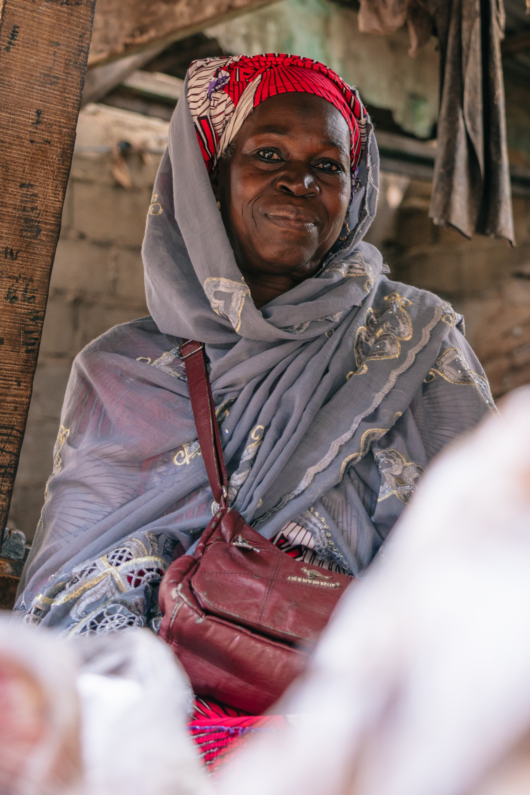

Cote d'Ivoire: Bouake, La Rebelle
History
Bouake is the second-largest city in Cote d'Ivoire, located in the central part of the country, with a population of 740,000 (2021 census). The area was originally inhabited by the Baoule people, an Akan ethnic group that migrated from present-day Ghana in the 18th century. The city's name is believed to come from a Baoule village that predated colonial influence.
Bouake began to develop significantly during the French colonial period in the early 20th century. Soon the French established a military post in the area, which soon became a hub for trade and administration. Its strategic location along the Abidjan-Niger railway, completed in the 1930s, connected Bouake to the southern port of Abidjan and the northern regions of the country, fostering its growth as a commercial and industrial center.
As the largest city in central Cote d'Ivoire, Bouake plays a vital role in the national economy. It is a key center for agricultural trade, particularly in cotton, cashew nuts, yams, and maize. The surrounding region produces much of the country's cotton, and Bouake hosts several cotton ginning factories and textile plants. Cashew nut processing is also a growing industry, supporting local employment and export revenue.
In addition to agriculture, Bouake has a well-developed livestock market, with cattle and other livestock brought from northern Cote d'Ivoire, Mali, and Burkina Faso. The city's central market serves as a distribution hub for manufactured goods and food products heading to rural areas. Bouake's location makes it a crossroads for wholesale trade between the north and south of the country.
Since the early 2000s, Bouake has also seen growth in the service sector, including education, banking, healthcare, and transportation. The city is home to universities and technical colleges that support the local labor force and attract students from across the region.
In the early 2000s, Bouake was heavily affected by the Ivorian civil conflict. From 2002 to 2011, it served as the de facto capital of the rebel-held north and experienced political instability, economic disruption, and a significant military presence. Despite these challenges, Bouake has remained a resilient city and an important cultural and economic hub.
The Retailer Project
As I was living in Abidjan for almost two years before starting my PhD, one of my favorite activities was to go grocery shopping in the informal marketplaces and see what was the freshest fruit and vegetable in season. Through these repeated interactions, I began to connect with the retailers I regularly bought from. We talked about the prices of goods, where they were sourced, and the challenges of making a living by selling small quantities at the lowest possible prices. Many of these retailers told me that most vegetables were either from or coming through Bouake, where, according to them, "everyone was a trader of something." Intrigued by this, I decided to visit Bouake and see for myself.
Bouake is a city that has seen its share of challenges, especially during the civil conflict in the early 2000s. However, it has also been a place of resilience and economic adaptation. The local economy is largely informal, with countless small retailers selling goods in markets and on the streets. To better understand the city, I met with Jackson Hien, a PhD student in sociology at Universite Alassane Ouattara in Bouake. He showed me around and introduced me to the retailers from whom he regularly bought his food. We learned how each of the city's 15 marketplaces had its own unique identity and reputation. More surprisingly, we discovered that there was only one wholesale market where nearly all the fruits and vegetables produced in the Vallee du Bandama region and beyond were gathered before being distributed to the different selling points around the city.
Quickly, we both began to wonder why retailers didn't at least share transportation costs to go to the wholesale market together. The answer remained vague. Surprisingly, all the retailers agreed that this would be a great idea—but that no one would step up to organize it and facilitate the implementation of such a change.
From there, it became clear that something could be done to improve the sourcing side of these small businesses. We began piloting different ways of cooperating out of our sample, based on the retailers' suggestions, and eventually converged on a solution that retailers found practical and effective. The implementation was simple enough to scale across 12 markets in the surrounding neighborhoods, covering around 750 retailers out of the 1,000 we had previously identified.
Urban Landmarks - Personal Favorite


Testimony
These testimonies highlight the challenges and experiences of small-scale retailers in the Sokoura.

I was born in 1968, right here in the market. This has been my world since I was a child. I only made it to 6th grade in school before I started working alongside my mother, selling tomatoes and okra, Maggi cubes, eggplant, and peppers—the same products I sell today.
My mother came from Katiola, and my father was Malian, working on the railway as a mason. My grandfather was chief of the RAM. I'm one of seven children, with two older sisters who both work at the refinery as secretaries.
I have three children of my own—two daughters and a son. My eldest daughter has been a nurse for over 30 years now. My son works hard and takes care of himself. My youngest daughter just got her baccalaureate when she was 18, and she's continuing her studies.
We speak Dioula at home, and this market has been our family's life for generations. It's where I learned everything I know about business, about taking care of people, about making a living with your hands and your heart. — Malle Salimata

I was born in Mali, in the city of Kian, about 60 years ago. I've been selling at the Sokoura market for 40 years now. This market has become my world, the place where I learned to do business, to take care of people, to make a living with my hands and my heart.
I was married for over 45 years to a tailor. Together we had 12 children—3 boys and 9 girls. Today, I have 9 children still alive; three have passed away. My first child is now 35 years old, and my youngest is only 14 and still in primary school. My parents were farmers, and it's from them that I inherited this strength to work hard.
I've been a widow for 10 years now. My husband passed away, and it was only this year that I returned to Mali for his funeral ceremonies. At the market, I'm helped by my fifth child, a daughter who has 5 children of her own but lost her husband. All my daughters are married, and among my children, only three went to school, but only one continues his studies.
None of my children work formally, but we support each other. This Sokoura market has witnessed my life, my joys and my sorrows. It's here that I learned that commerce is more than selling—it's about creating connections, being part of a community, surviving and thriving together. — Diarra Massetou
Colors of Marketplaces


Book and Press Coverage
← Back to main page